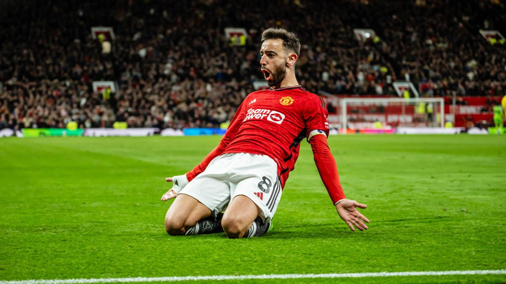
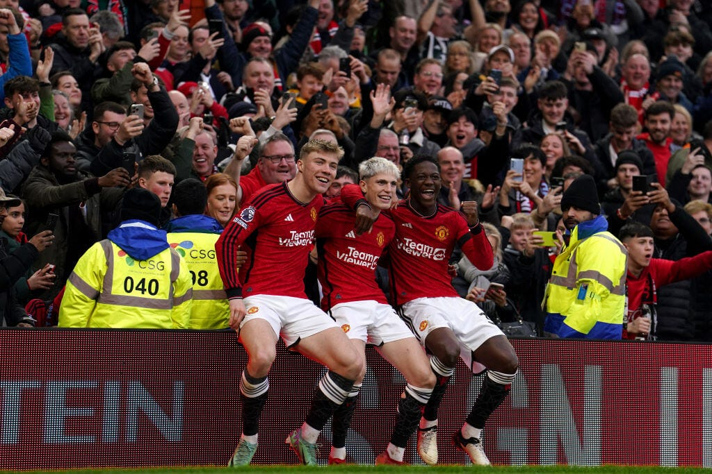
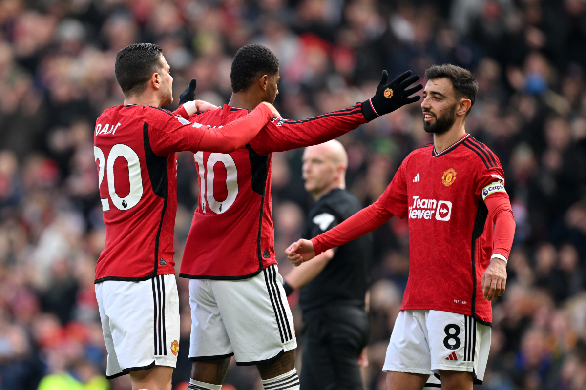

Introduction to the team
The team has had great stars who have started their career here. Players like Christiano Ronaldo, Wayne Rooney, Ryan Giggs, David Beckham, and so many more. One of the most recent stars who started their career here is Marcus Rashford.
Photos
The first image is Bruno Fernandez celebrating a goal while sliding. He has been a great contributor to the team as a center defense midfielder while still be able to join in the attacks.
The second image is three of Man United's younger players. From left to right, Hojlund, Garnacho, and Mainoo bring energetic youth, speed, and style to the team.
Left to right, Dalot, Rashford, and Fernandez celebrate a goal. Dalot is essential to the defense, Rashford to the offense, and Fernandez is key player that contributes to both aspects of the game.
Videos
Please enjoy this video of Manchester United's talent. It is from over the years to show case their tremendous talent and their success. Thank you for visiting!